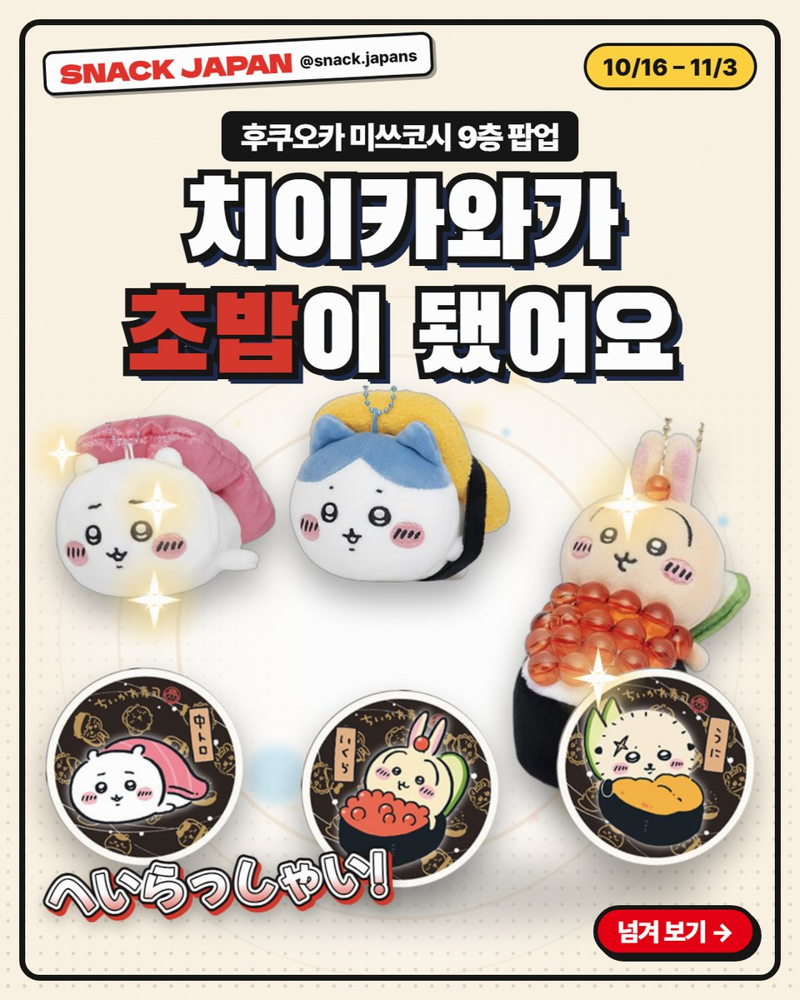
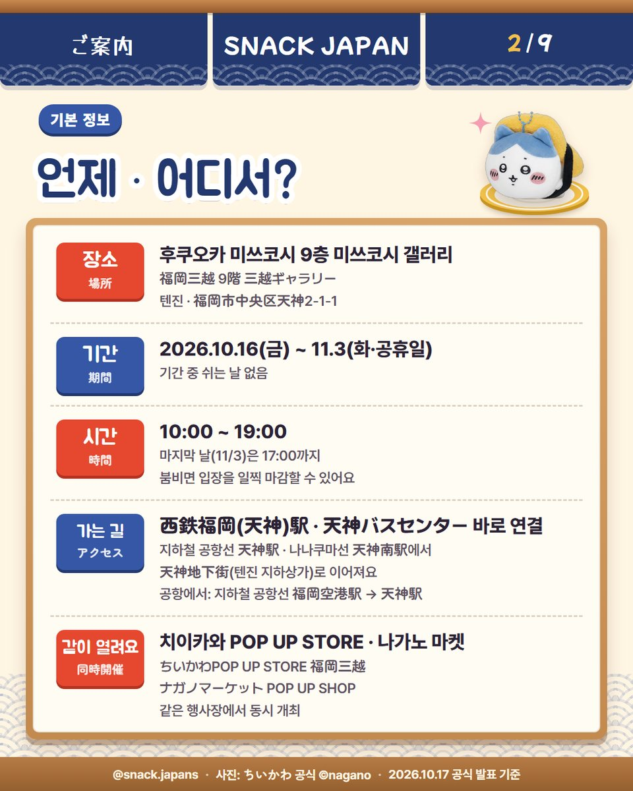
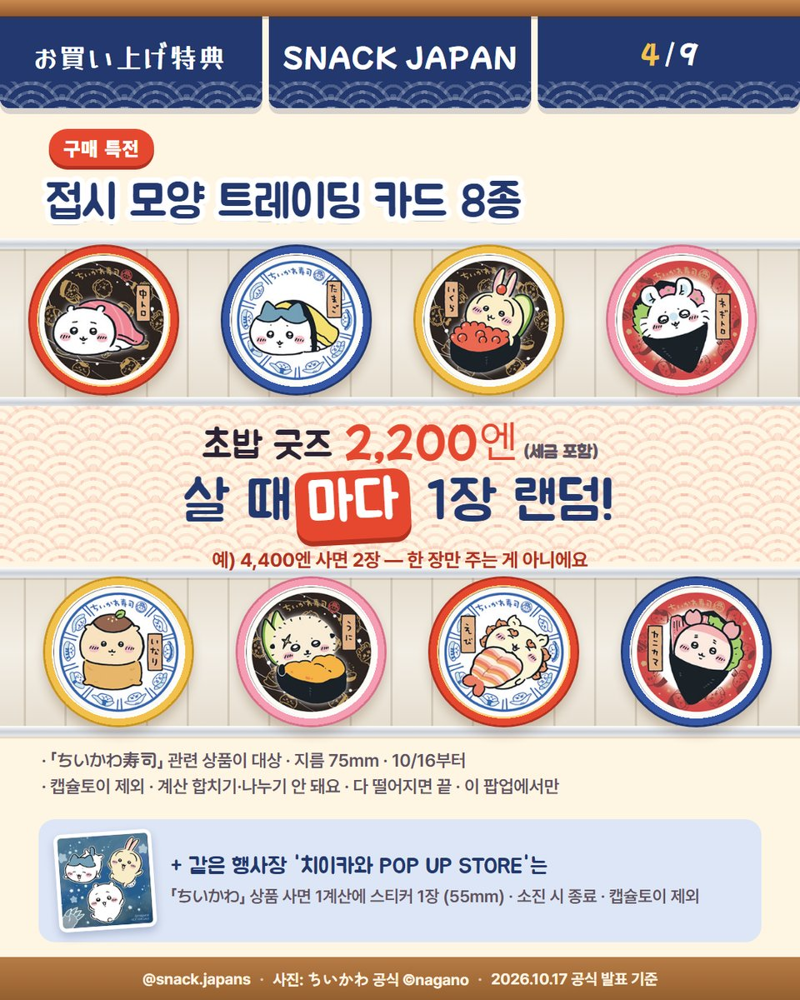
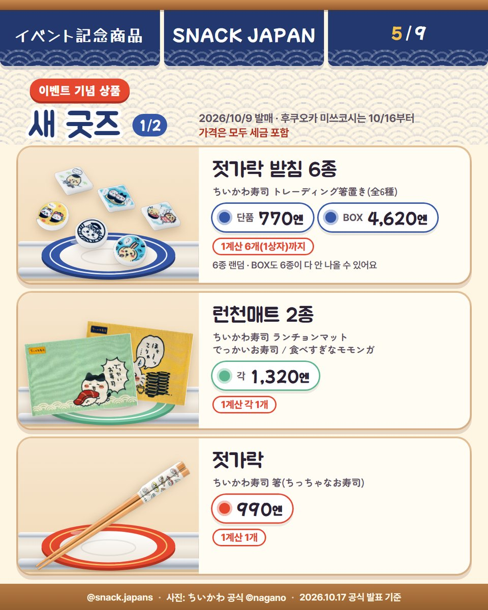
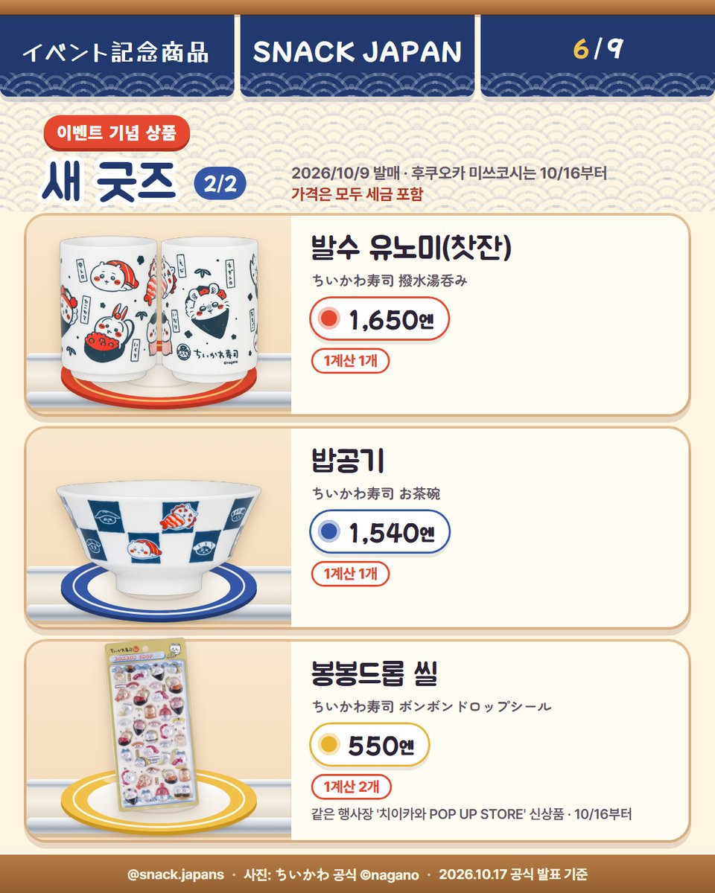
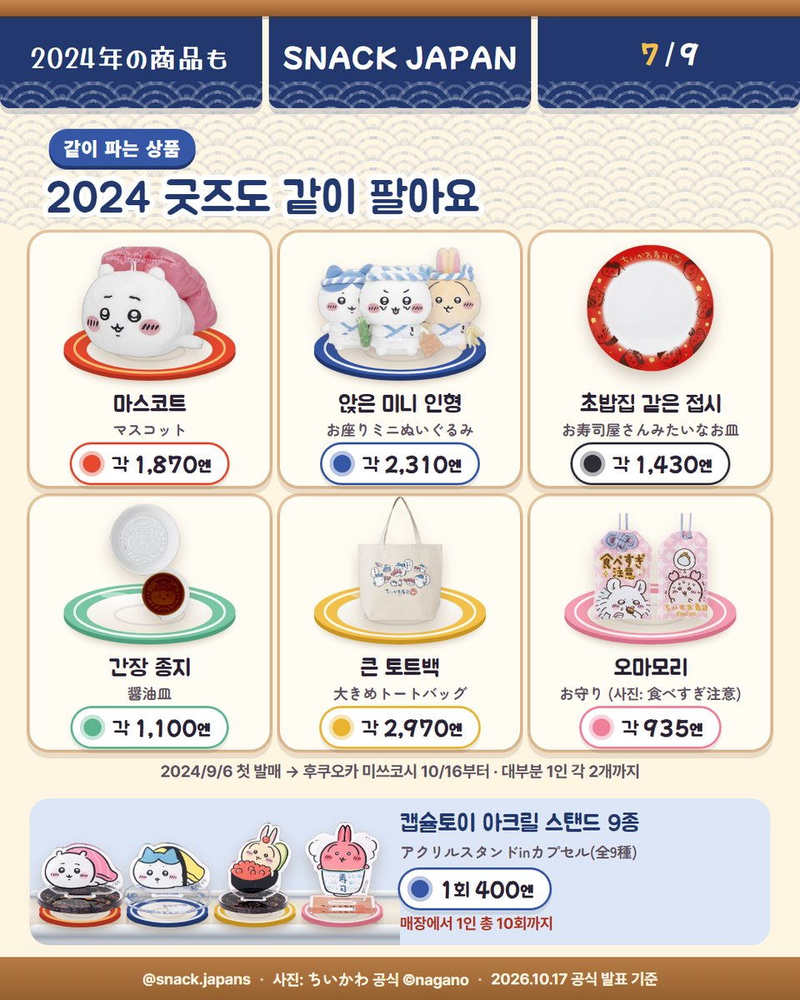
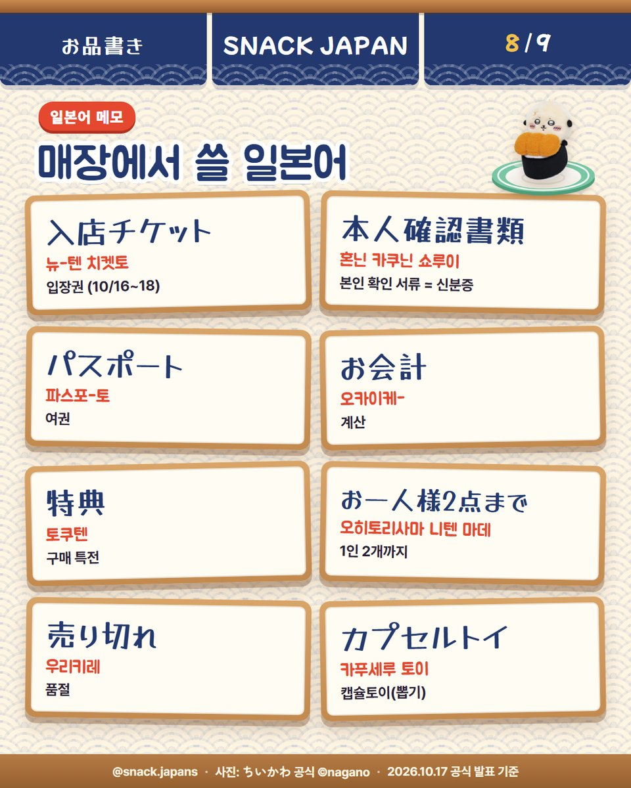

후쿠오카 치이카와 스시 팝업, 미쓰코시 9층에서 치이카와가 초밥이 됐어요
후쿠오카 미쓰코시에서 11/3까지! 초밥이 된 치이카와 굿즈에, 살 때마다 받는 접시 모양 카드 특전까지 가기 전에 알아 둘 것을 정리했어요.
치이카와가 초밥이 됐어요?! 🍣
후쿠오카 미쓰코시에서
'치이카와 스시' 팝업이 열리고 있어요.
11/3까지라서 후쿠오카 가는 분들은 주목!
치이카와 공식 안내 기준으로 정리해 볼게요.

1. 언제·어디서?
- 이름: むちゃうま!!ちいかわ寿司 POP UP STORE
- 장소: 후쿠오카 미쓰코시 9층 미쓰코시 갤러리 (텐진)
- 기간: 2026.10.16(금) ~ 11.3(화·공휴일), 기간 중 쉬는 날 없음
- 시간: 10:00~19:00 (마지막 날 11/3은 17:00까지)
- 붐비면 입장을 일찍 마감할 수 있어요

2. 가는 길
니시테쓰 후쿠오카(텐진)역, 텐진 버스센터와 바로 연결돼요.
지하철 공항선 텐진역·나나쿠마선 텐진미나미역에서는
텐진 지하상가로 이어져요.
- 공항에서: 지하철 공항선 후쿠오카공항역 → 텐진역
- 같은 행사장에서 '치이카와 POP UP STORE'와 '나가노 마켓'도 함께 열려요
3. 입장은 LINE 정리권부터
후쿠오카 미쓰코시 공식 안내를 다시 보니
10/21(수)~11/3(화·공휴일)에도 LINE으로 받는 입장 정리권이 필요해요.
- 기간 중 1인 1번만 들어갈 수 있어요
- 개점~12:30 입장분은 전날 19시부터, 13시 이후 입장분은 각 회 1시간 전부터 신청
- 정리권은 입장 시작부터 1시간 안에 써야 해요
- 들어갈 때 신분증으로 본인 확인 (여행 중이면 여권 챙기기)
- 정리권 1장에 1명, 계산은 1번
- 상황에 따라 중간부터 자유 입장으로 바뀔 수 있대요
신청 방법은 치이카와 공식 X·홈페이지에 있어요.

4. 구매 특전: 접시 모양 카드 8종
초밥 굿즈를 일정 금액 살 때'마다'
접시 모양 트레이딩 카드를 1장씩 랜덤으로 줘요.
한 번만 주는 게 아니에요!
- 기준 금액: 사진 카드에 정리해 뒀어요
- 카드 지름 75mm, 그림 8종
- 캡슐토이는 빠지고, 계산 합치기·나누기는 안 돼요
- 다 떨어지면 끝, 이 팝업에서만
- 같은 행사장 '치이카와 POP UP STORE'는 치이카와 상품을 사면 1계산에 스티커 1장 (다 떨어지면 끝, 캡슐토이 제외)


5. 새 굿즈 (이벤트 기념 상품)
10/9에 나온 새 굿즈를
후쿠오카 미쓰코시에선 10/16부터 팔아요.
- 젓가락 받침 6종: 랜덤, 1계산 6개(1상자)까지, 상자로 사도 6종이 다 안 나올 수 있어요
- 런천매트 2종: 1계산 각 1개
- 젓가락: 1계산 1개
- 발수 유노미(찻잔): 1계산 1개
- 밥공기: 1계산 1개
- 봉봉드롭 씰: 1계산 2개 ('치이카와 POP UP STORE' 신상품)
- 가격: 사진 카드에 정리해 뒀어요

6. 2024 굿즈도 같이 팔아요
2024년에 처음 나온 치이카와 스시 굿즈도 같이 팔아요.
대부분 1인 각 2개까지예요.
- 마스코트, 앉은 미니 인형, 초밥집 같은 접시
- 간장 종지, 큰 토트백, 오마모리 등
- 캡슐토이 아크릴 스탠드 9종 (매장에서 1인 총 10회까지)

7. 매장에서 쓸 일본어
- お会計 (오카이케-): 계산
- 特典 (토쿠텐): 구매 특전
- お一人様2点まで (오히토리사마 니텐 마데): 1인 2개까지
- 売り切れ (우리키레): 품절
- カプセルトイ (카푸세루 토이): 캡슐토이(뽑기)
총평
- 추천: 치이카와 좋아하는 분, 11/3 전에 후쿠오카 텐진 가는 분
- 기준: 2026.10.17 치이카와 공식 발표 · 후쿠오카 미쓰코시 공식 안내(10/27 다시 확인)
- 참고: 인기 상품은 품절될 수 있어요
초밥 좋아하는 치이카와 팬이라면
후쿠오카 일정에 꼭 넣어 두세요 🍣
사진: 치이카와 공식(ちいかわ) ©nagano
SNACK JAPAN은 치이카와 공식 계정이 아니에요.